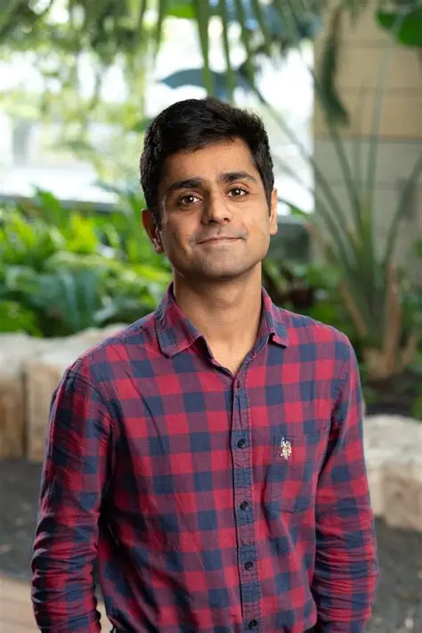

Universality and Dynamics
in High-Dimensional Learning and Inference

| Home | Call for Papers | Program | Contact |
High-dimensional learning and inference have recently seen a string of rigorous results showing that both learning performance and dynamics obey universal mean-field laws.
This workshop aims to bring together researchers from information theory, machine learning (ML), high-dimensional statistics, random matrix theory, and statistical physics, to develop a unified view of these advances. Topics include dynamical mean-field limits for learning algorithms, universality and Gaussian equivalence in and beyond generalized linear models, universality of iterative algorithms such as AMP, and information-theoretic questions motivated by these asymptotic laws.
|  Rishabh Dudeja UW Madison | Zhenyu Liao HUST |
 Junjie Ma
CAS
Junjie Ma
CAS
|
 Arian Maleki
Columbia University
Arian Maleki
Columbia University
|